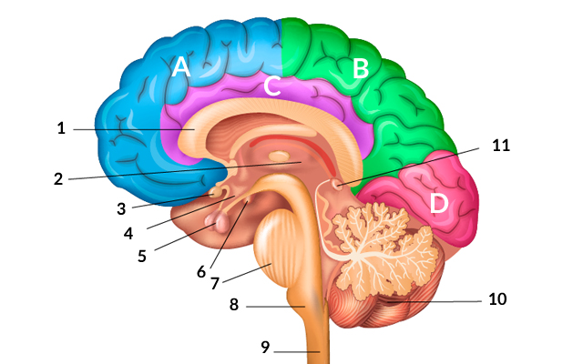

Человеческмй мозг
Что такое мозг?
Мозг — это сложный орган, который является частью Центральной Нервной Системы (ЦНС). Он расположен в передней и верхней части черепной полости, а также присутствует во всех позвонках. В черепной коробке мозг плавает в прозрачной жидкости, называемой спинномозговой жидкостью, которая даёт ему как физическую защиту, так и иммунитет.
Мозг — это мышца? Мы часто слышим, что для того, чтобы не атрофироваться, мозг, как и мышцы, должен тренироваться. Несмотря на это, важно помнить, что он не является мышцей. Этот орган состоит не из миоцитов, а из миллионов нейронов, связанных между собой при помощи аксонов и дендритов. Каждый по отдельности и все вместе они регулируют функции нашего мозга и тела. Наше дыхание, питание и сон, способность рассуждать, влюбляться и спорить, - всё это контролируется им.
Зачем нужен мозг? Функции мозга
Как главный орган ЦНС, он контролирует и регулирует большинство функций человеческого организма. Начиная от жизненно важных, таких, как, например, дыхание или сердечные ритмы, сон, голод, жажда, до высших функций: рассуждение, память, внимание, контроль эмоций и поведение.
Мозг регулирует все производимые нами во сне и наяву действия: когда мы дышим или глотаем, смотрим, слушаем, что-то трогаем или пробуем, читаем или пишем, поём или танцуем, думаем в тишине или говорим, любим или ненавидим, ходим или бегаем, планируем или действуем спонтанно, представляем или создаём, и т.д. Составим список основных функций мозга:
- Контроль жизненных функций: контроль температуры тела, артериального давления, частота сердечных сокращений, дыхание, сон, питание...
- Приём, обработка, интеграция и интерпретация всей полученной от органов чувств информации: зрение, слух, вкус, осязание и обоняние.
- Контроль движений и поз тела: ходьба, бег, речь, стояние на месте.
- Отвечает за наши эмоции и поведение.
- Позволяет нам думать, рассуждать, чувствовать, быть.
- Контролирует высшие когнитивные функции: память, обучаемость, восприятие, исполнительные функции.
Гиппократ догадался, что человеческий мозг является одним из самых сложных, загадочных и в то же время совершенных творений природы. В своё время Гиппократ и его современники даже не могли себепредставить, как далеко мы продвинемся в изучении этого органа. Благодаря технологическим достижениям внейровизуализации, медицине, биологии, психологии и нейронауках в целом мы смогли разгадать важнейшие тайны его анатомии и функций. Однако до сих пор существует множество секретов и вопросов, на которые пока нет ответа.
Характеристика человеческого мозга
- Кора головного мозга людей является одной из самых сложных и развитых. Она не только крупнее, чем у животных, но и образует сложную структуру, формируя борозды и извилины, придающие ей характерный сморщенный вид.
- Человеческий мозг весит около 1,4-1,5 кг, а его объем достигает 1130 и 1260 кубических сантиметров у женщин и мужчин соответственно.
- Мозг (и спинной мозг) покрыты оболочками, называемыми мозговыми оболочками, защищающими мозг от ударов по черепу.
- Для большей защиты мозг "плавает" в спинномозговой жидкости.
Отделы головного мозга
- Мозолистое тело - сплетение нервных волокон в головном мозге млекопитающих, соединяющее правое и левое полушария.
- Таламус - основная масса промежуточного мозга (имеет около 120 различных ядер), получающая импульсы всех видов чувствительности, кроме обонятельных, и передающая их в кору больших полушарий.
- Зрительный перекрест — точка в основании мозга, где волокна двух зрительных нервов перекрещиваются и расходятся.
- Гипоталамус – отдел промежуточного мозга, контролирующим образование гормонов гипофизом.
- Гипофиз расположен у основания головного мозга, его основная задача – выработка гормонов, регулирующих функции всех периферических эндокринных желез.
- Базальные ганглии, миндалина, гиппокамп и сосцевидные тела - влияют на наше поведение, передвижение и т.п.
- Варолиев мост - верхняя часть ствола у человека. Содержит нервные волокна, соединяющие две половины мозжечка.
- Продолговатый мозг - задний отдел головного мозга, непосредственное продолжение спинного мозга. Происходит из ромбовидного мозга и входит в ствол головного мозга.
- Спинной мозг - выполняет две основные функции: рефлекторную и проводниковую.
- Мозжечок - один из важнейших отделов головного мозга, который отвечает за координацию движений и пространственную ориентацию.
- Эпифиз - орган, который выполняет эндокринную функцию. Железа состоит из нейронных клеток (пиноцитов), связанных со светочувствительными клетками сетчатки. Эпифиз отвечает за память, любознательность, агрессивность, половое влечение.